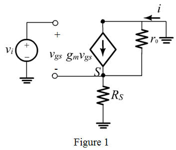
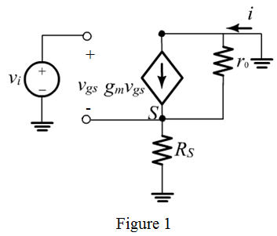
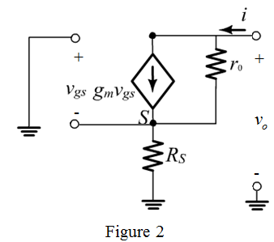

Refer to Figure P7.35 in the textbook for the CS amplifier with a resistance  in the source lead and with the drain short-circuited to ground.
in the source lead and with the drain short-circuited to ground.
The equivalent circuit of the source-degenerated CS amplifier is shown in Figure 1.

Refer to Figure P7.35 in the textbook for the CS amplifier with a resistance in the source lead and with the drain short-circuited to ground.
The equivalent circuit of the source-degenerated CS amplifier is shown in Figure 1.

From Figure 1, write Kirchhoff’s voltage law for the output loop.
…… (1)
Apply Kirchhoff’s voltage law for the input loop.
Consider equation (1).
Substitute for  in the equation.
in the equation.
Thus, the short-circuit trans-conductance is, .
To find output resistance , short circuit the input voltage source
, short circuit the input voltage source  as shown in Figure 2.
as shown in Figure 2.

From Figure 2, the voltage  is,
is,
From Figure 2, the output voltage is,
Substitute for  in the equation.
in the equation.
Thus, the output resistance is, .
 .
.
Substitute for  and for
and for  in the equation.
in the equation.
It is known that voltage gain of CS amplifier is, . Hence, the open-circuit voltage gain is,
Therefore, it is proved that the open circuit voltage gain is, .